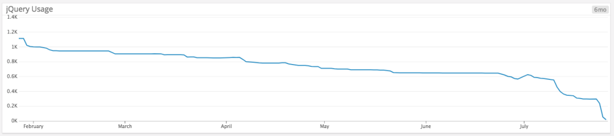

$('.js-widget')
.addClass('is-loading')
.show()
设定指标，跟踪整一行代码调用 jQuery 的比率，并监控指标走势随时间变化的情况，确保它保持不变或下降，而不是上升。 
我们不鼓励在任何新代码中导入 jQuery。为了方便自动化，我们创建了eslint-plugin-jquery（https://github.com/dgraham/eslint-plugin-jquery），如果有人试图使用 jQuery 功能，例如$.ajax，CI 检查将会失败。
旧代码中存在大量违反 eslint 规则的情况，我们在代码注释中使用特定的 eslint-disable 规则进行了注解。看到这些代码的读者，他们都该知道，这些代码不符合我们当前的编码实践。
我们创建了一个拉请求机器人，当有人试图添加新的 eslint-disable 规则时，会对拉取请求留下评论。这样我们就可以尽早参与代码评审，并提出替代方案。
很多旧代码使用了 pjax 和 facebox 插件，所以我们在保持它们的接口几乎不变的同时，在内部使用 JS 重新实现它们的逻辑。静态类型检查有助于提升我们进行重构的信心。
很多旧代码与 rails-behavior 发生交互，我们的 Ruby on Rails 适配器几乎是“不显眼的”JS，它们将 AJAX 生命周期处理器附加到某些表单上：
// 旧方法
$(document).on('ajaxSuccess', 'form.js-widget', function(event, xhr, settings, data) {
// 将响应数据插入到 DOM 中
})
我们选择触发假的 ajax* 生命周期事件，并保持这些表单像以前一样异步提交内容，而不是立即重写所有调用，只是会在内部使用 fetch()。
我们自己维护了 jQuery 的一个版本，每当发现我们不再需要 jQuery 的某个模块的时候，就会将它从自定义版本中删除，并发布更轻量的版本。例如，在移除了 jQuery 的 CSS
伪选择器之后（如:visible 或:checkbox）我们就可以移除 Sizzle 模块了，当所有的 $.ajax 调用都被 fetch() 替换时，就可以移除 AJAX 模块。
这样做有两个目的：加快 JavaScript 执行速度，同时确保不会有新代码试图使用已移除的功能。
我们根据网站的分析结果尽快放弃对旧版本 Internet Explorer 的支持。每当某个 IE 版本的使用率低于某个阈值时，我们就会停止向它提供 JavaScript 支持，并专注支持更现代的浏览器。尽早放弃对 IE 8 和 IE 9 的支持对于我们来说意味着可以采用很多原生的浏览器功能，否则的话有些功能很难通过 polyfill 来实现。
作为 GitHub.com 前端功能开发新方法的一部分，我们专注于尽可能多地使用常规 HTML，并且逐步添加 JavaScript 行为作为渐进式增强。因此，那些使用 JS 增强的 Web 表单和其他 UI 元素通常也可以在禁用 JavaScript 的浏览器上正常运行。在某些情况下，我们可以完全删除某些遗留的代码，而不需要使用 JS 重写它们